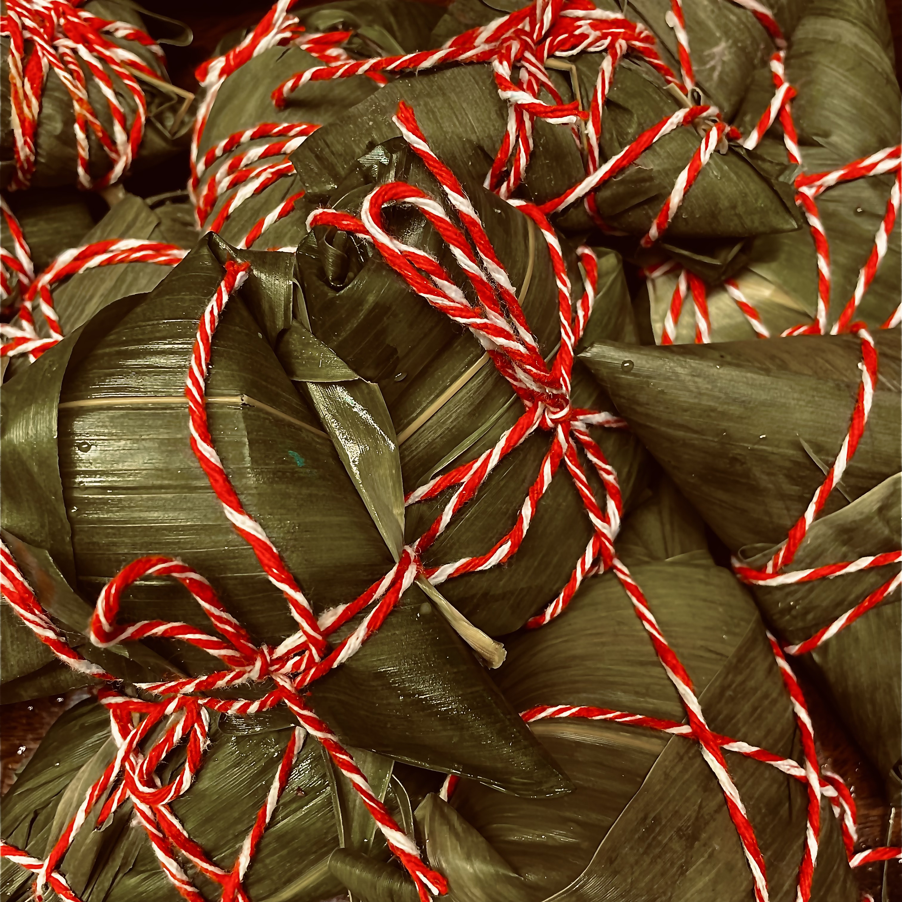

Food transports us to locations and ages in time. This blog seeks to celebrate recent festivals and holidays based on research, implementation, tasting, and sharing, in that order.

China · Ancient China
Zongzi dates back over 2,000 years, to a poet who drowned himself in protest and a ghost who, legend says, asked the living to seal rice in leaves and bind it with string. What began as an offering to keep dragons away from a spirit's resting place became, over centuries, a celebration in its own right — sticky rice wrapped in bamboo, tied tight, and shared with family every Dragon Boat Festival.
This batch holds two camps: a sweet red bean and date version, and a savory one built on five-spice braised pork and salted egg yolk. Every fold is a little different, every knot a little messier than the last — and that's exactly the point.
This blog does not claim authenticity as its forefront — quite the contrary. It's food from a stranger's standpoint. Having lived in many multicultural neighborhoods, I had the realization that there is so many unique holidays that I miss out on from other cultures (with so many good dishes), therefore I want this blog to share the present holidays of many backgrounds, its history, its traditions, and of course, its food. All from a stranger's learnings.
Food has long been just a necessity; people need food, yes, but since the dawn of time food and taste have gone hand in hand. Food doesn't just allow us to live — we live for food.
The fun of cooking is what this blog is for, it might not always turn out perfect, but have fun along the way. Feel free to eyeball, give or take as your heart desires. A grandma cooking approach rather than a chef's.
Correspondence is always welcome. Whether you have a recipe to share, a story to tell, or simply want to say hello.
✉ annasblogfth@gmail.com